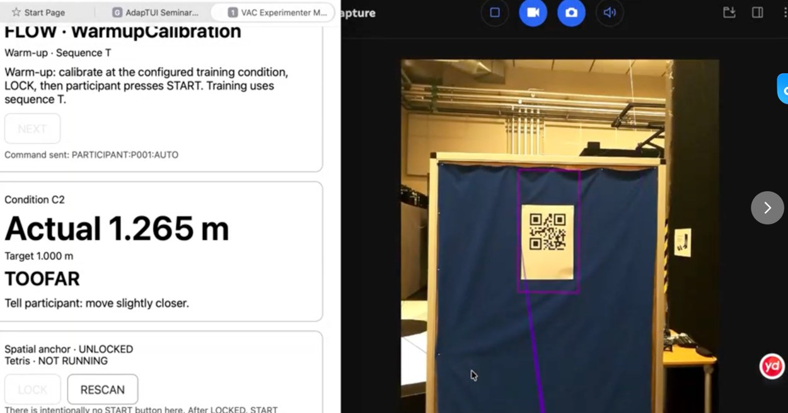
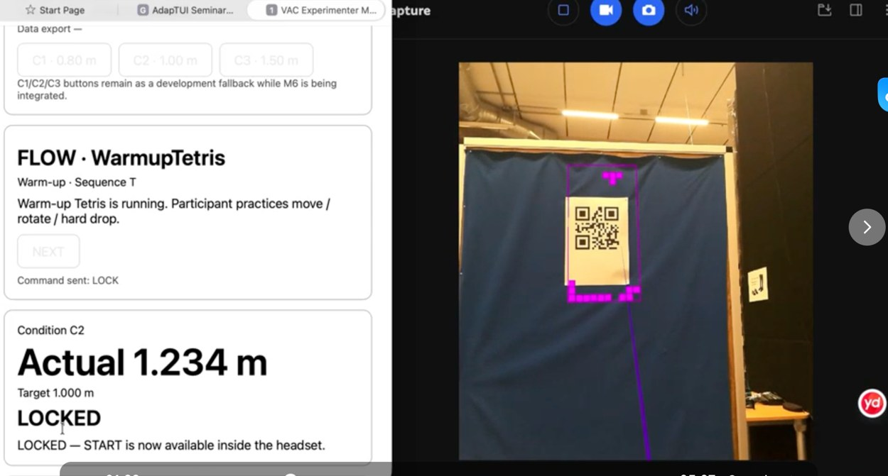

When depth
disagrees.
Vergence–Accommodation Conflict in XR — a research prototype exploring how virtual depth, visual comfort and interaction relate in a mixed-reality experiment.
Move through a depth field.
Adjust the illustrated object's depth. The display is conceptual; its values are for exploring spatial relationships, not collected measurements.
In an optical see-through headset, convergence cues and the display's accommodation plane need not coincide. This illustration conveys the depth relationship only.
From calibration to judgment.
Based on the documented prototype workflow: prepare spatial tracking and targets, lock the intended depth, practice Tetris, and proceed to a formal depth-judgment task. The exact final three-condition protocol is not reproduced here because it requires verification.
Track a spatial anchor and verify the target's position before exposure.
Research integrity: this is a graphical explanation of the prototype, not experimental output, measured VAC magnitude, or a claim that C1/C2/C3 represent final confirmed conditions.
VIEW STUDY CODE ↗Inspect the setup
before the task.
My focus with a teammate: Magic Leap 2 implementation, QR registration, task interaction and experiment logging. This is ongoing team research in collaboration with Ericsson.


Original October 2026 development captures. Displayed distances are development settings, not final study parameters. The intended study uses Tetris, depth judgement and subjective discomfort/experience measures. No completed participant results are claimed.